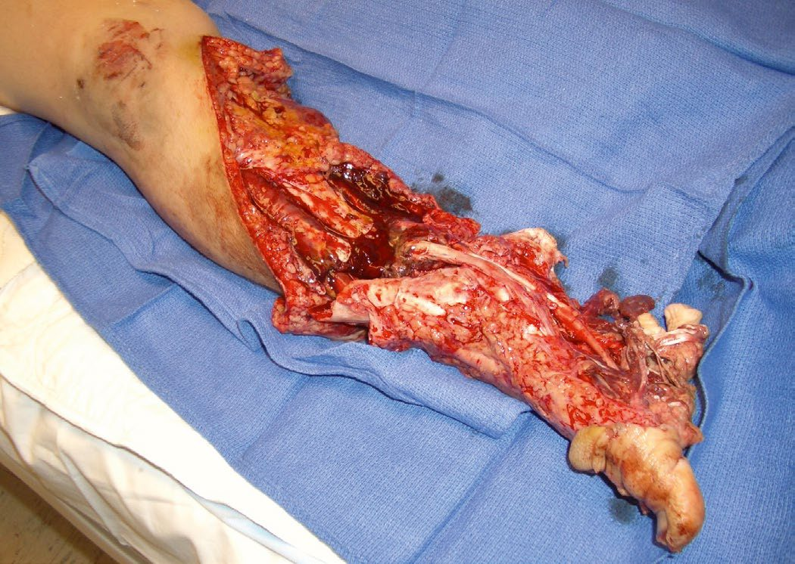
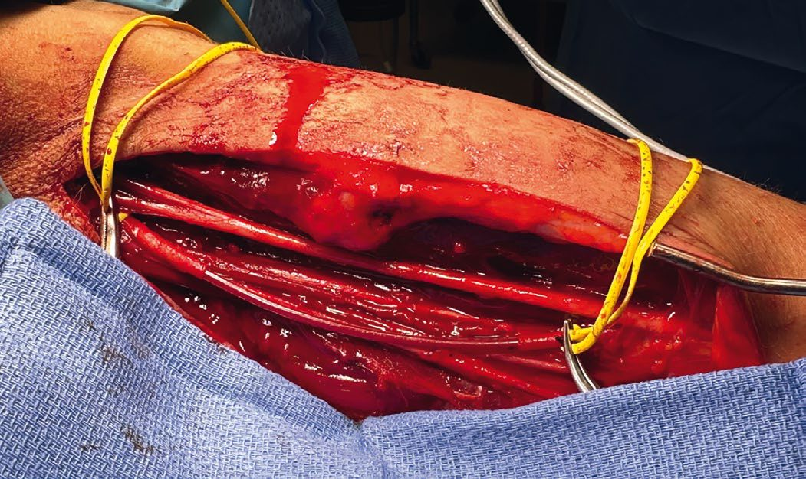
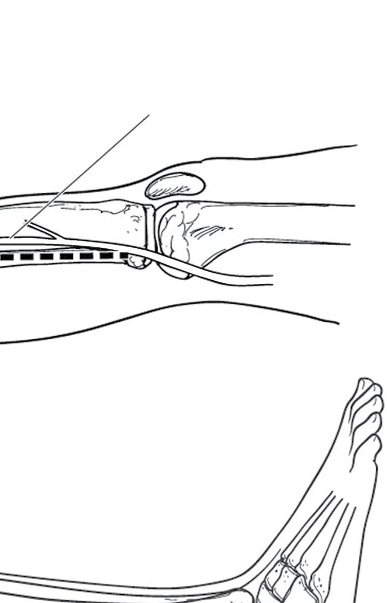

Extremity and Vascular Trauma
Summary
- The order of operations in a mangled limb is fixed: vascular repair, or a vascular shunt, is performed before orthopaedic repair [1].
- The decision to explore is made on signs rather than imaging, any hard sign of vascular injury means going to theatre, while soft signs get a CT angiogram [1].
- This page covers hard and soft signs, arterial and venous repair, prophylactic fasciotomy, compartment syndrome, and the fracture-injury pairs that predict which nerve or artery has been damaged. Distal pulses can be present in compartment syndrome, pulselessness is the last thing to go [2].
Definition
Hard signs of extremity vascular injury are active haemorrhage, pulse deficit, an expanding or pulsatile haematoma, distal ischaemia, and a bruit or thrill [1].
Soft signs are a history of haemorrhage, a large stable non-pulsatile haematoma, an ABI below 0.9, and unequal pulses [1].
Pathophysiology
Compartment syndrome most commonly follows the restoration of blood flow rather than its loss. It is commonest in the anterior compartment of the leg, giving foot drop, after vascular compromise, restoration of flow, and the subsequent reperfusion injury mediated by neutrophils with swelling of the compartment [2]. It also occurs after crush injury [2].
The classical mechanisms are supracondylar humeral fractures, tibial fractures, crush injuries, knee dislocations, or any injury that disrupts and then restores blood flow after 4 to 6 hours [1].
Compartment syndrome can lead to rhabdomyolysis and subsequent renal failure [1].
Clinical features
The sequence of signs in compartment syndrome runs in a fixed order, and the pulse is last. Pain with passive motion, then paraesthesia, then anaesthesia, then paralysis, then poikilothermia, then pulselessness as a late finding [2]. The limb is swollen and tight [2].
Pain under a cast is managed by removing the cast and examining the limb [2].
It can also occur in a patient found "down", from muscle crush injury [1].

Etiology
Specific fractures and dislocations predict specific injuries [1]:
| Injury | Associated nerve or artery |
|---|---|
| Anterior shoulder dislocation | Axillary nerve |
| Posterior shoulder dislocation | Axillary artery |
| Proximal humerus fracture | Axillary nerve |
| Midshaft or spiral humerus fracture | Radial nerve |
| Supracondylar humerus fracture | Brachial artery |
| Elbow dislocation | Brachial artery |
| Distal radius fracture | Median nerve |
| Anterior hip dislocation | Femoral artery |
| Posterior hip dislocation | Sciatic nerve |
| Supracondylar femur fracture | Popliteal artery |
| Posterior knee dislocation | Popliteal artery |
| Fibular neck fracture | Common peroneal nerve |
More than 2 litres of blood can be lost from a femoral fracture [1].
Diagnosis
Hard signs go to theatre; soft signs go to CT. Any hard sign means exploration in the operating theatre, possibly with on-table angiography to define the injury; any soft sign means CT angiography, with formal angiography if a vascular injury is found [1].
A pulse deficit or distal ischaemia alongside an orthopaedic injury is managed by reducing the fracture or dislocation first, then reassessing the pulse and ABI [1].
Where a long bone fracture or dislocation has lost or weakened the pulse: reduce immediately and reassess. If the pulse does not return, go to theatre for bypass or repair; if the pulse is weak, get a CT angiogram [1]. The exception is knee dislocation, all need formal angiography, unless the pulse is absent, in which case go straight to theatre [1].
Compartment syndrome is a clinical diagnosis [2].
Hard signs, the A-A index and fracture blood loss in Schwartz's account
- Physical examination finds most arterial injuries, hard signs mandating exploration and soft signs further testing or observation, after realigning fractures and dislocations; for soft signs or proximity the Doppler systolic pressure of the injured side is compared with the uninjured (the A-A index), a difference under 10% ending the work-up and over 10% prompting CTA or arteriography, though occult pseudoaneurysms and profunda femoris or peroneal injuries may escape this and the occasional trauma surgeon may prefer CTA for selected soft signs; with hard signs, on-table angiography localises the lesion and limits dissection, an absent popliteal pulse with a femoral fracture from a bullet entering the lateral hip and exiting below the knee could reflect injury anywhere along femoral or popliteal artery [4].
- Fractures bleed additively (100–200 mL per rib, 300–500 for tibia, 800–1000 for femur and over 2000 for pelvis) and iliofemoral thrombosis after blunt pelvic trauma warrants CTA for any pulse differential [4].
- Compartment syndrome follows arterial bleeding into a compartment, venous ligation or thrombosis, crush or reperfusion, presents with pain worsened by active or passive movement and paraesthesia, first-web numbness marking the exquisitely sensitive anterior compartment and its deep peroneal nerve, paralysis progressing and pulse loss late; in the obtunded a tense limb is measured with a hand-held Stryker device, and fasciotomy is indicated for a diastolic-minus-compartment gradient under 30 mmHg, an absolute pressure over 30 mmHg, ischaemia over 6 hours or combined arterial and venous injury [4].
Thresholds and severity
Compartment pressure above 20 mmHg is the trigger for concern, or a clinical examination suggesting elevated pressures [1]; the ABSITE Review's orthopaedic chapter gives 20 to 30 mmHg as abnormal [2].
Consider prophylactic fasciotomy for any ischaemia lasting more than 4 to 6 hours, to prevent compartment syndrome [1].
A reversed saphenous vein graft is needed if more than 2 cm of arterial segment is missing [1].
The orthopaedic emergencies are pelvic fractures in unstable patients, spinal injury with a deficit, open fractures, dislocations or fractures with vascular compromise, and compartment syndrome [1].
Compartment syndrome can be present despite a normal-looking limb. Bailey & Love makes the point at the level of inspection: note the colour of the limb and the degree of general swelling, but a compartment syndrome may still be present even when these appear unremarkable [5].
It is generally a clinical diagnosis [5], which is why the pressure threshold above is a supporting figure rather than a gatekeeper.
Limb loss in this setting is usually attributable to two failures: excessive swelling and missed compartment syndrome [5].
Splinting and casting carry their own risk. Where there is a risk of swelling and compartment syndrome, the immobilisation itself must be chosen to remove that risk rather than compound it [5].
Treatment and Management
Arterial injuries are repaired with a reversed saphenous vein graft where a segment above 2 cm is missing, using vein from the contralateral leg when repairing lower limb arterial injuries [1]. Prophylactic fasciotomy should be considered for superficial femoral or popliteal artery injuries [1]. Transection of a single calf artery in an otherwise healthy patient can simply be ligated [1].
Venous injuries that usually need primary repair are the vena cava, femoral, popliteal, brachiocephalic, subclavian and axillary veins [1]. Where repair is not possible, or in damage control surgery, they can be ligated, with prophylactic fasciotomy considered for iliac, femoral or popliteal vein ligation [1]. The closer the ligation to the suprarenal IVC the higher the morbidity, and ligation of the suprarenal IVC should be avoided because of the high risk of renal failure [1].
The IVC is repaired primarily if residual stenosis is under 50% of its diameter, otherwise with a saphenous vein or synthetic patch [1]. Bleeding from the IVC is best controlled with proximal and distal pressure rather than clamps, which can tear it, and a posterior wall injury is repaired through the anterior wall, cutting through it if necessary [1].
Cover the site of any anastomosis with viable tissue and muscle [1].
Compartment syndrome is treated by fasciotomy [1].

Pelvic haemorrhage control in Schwartz's account
The unstable pelvic fracture needs immediate multidisciplinary involvement (trauma, orthopaedics, interventional radiology, blood bank, anaesthesia), sheeting or a binder before radiographs in high-risk mechanisms, and identification of injuries mandating operation or altering care (iliac artery, rectum, urethra, bladder); because 85% of pelvic fracture bleeding is venous or bony, the Denver group advocates immediate anterior external fixation (reducing pelvic volume to tamponade veins and prevent secondary bleeding from shifting bone) plus preperitoneal pelvic packing, six laparotomy pads (four in children), three each side of the bladder deep in the paravesical space through a 6–8 cm midline suprapubic incision, fascia closed with O polydioxanone, completed in under 30 minutes, removing the theatre-versus-angiography dilemma and permitting concurrent laparotomy, thoracotomy, fixation, fasciotomy, revascularisation or craniotomy; the Denver algorithm resuscitates with 2 L crystalloid, plasma to red cells 1:2 and an apheresis platelet unit per 5 red cell units with thromboelastography, places a 7F arterial sheath at systolic under 90 and considers REBOA under 80, and reserves angiography for over 4 units of red cells from the pelvis in the first 12 postoperative hours with normal coagulation; packs are removed within 48 hours after correcting coagulopathy, since repacking carries 47% infection, with topical agents, sutures or cautery at unpacking; open pelvic fractures with perineal wounds get a diverting sigmoid colostomy, manual debridement, daily high-pressure pulsatile irrigation until granulation and VAC-assisted healing by secondary intention [4].
Procedural interventions
Four-compartment fasciotomy of the calf is performed through incisions on the medial and lateral aspects [1].
The vascular shunt is the damage-control alternative to definitive repair, allowing perfusion to be restored before orthopaedic fixation proceeds [1].

Extremity vascular repair and fasciotomy in Schwartz's detail
- Fractures and unstable joints are splinted in the emergency department (Hare traction, knee immobiliser, plaster), open fractures dressed with povidone-iodine gauze and antibiotics, and fixed externally or by plates or intramedullary nails; classic combinations are clavicle or first rib with subclavian artery, shoulder dislocation or proximal humerus with axillary artery, supracondylar fracture or elbow dislocation with brachial artery, femoral shaft with superficial femoral artery and knee dislocation with popliteal vessels; on-table angiography (percutaneous femoral, exposed femoral or SFA above the medial knee) is warranted for limb threat on arrival; the authors place temporary intravascular shunts first, fix the fracture, then repair definitively, and immediate amputation is considered rarely for combined fracture, arterial injury and primary nerve transection by joint trauma–orthopaedic–plastics decision [4].
- Subclavian and axillary arteries take 6 mm PTFE or reversed saphenous vein after documenting brachial plexus function; the brachial artery is approached through a medial longitudinal incision with axillary proximal control and an S-shaped antecubital extension, excised and grafted with reversed saphenous vein, upper limb fasciotomy rarely being needed thanks to profunda collaterals; SFA injuries are externally fixed then grafted with close watch for calf compartment syndrome; the popliteal space is entered by a single medial incision detaching semitendinosus, semimembranosus and gracilis (two medial incisions with a longer graft and ligation of the popliteal and geniculate branches, or a posterior S-incision for open wounds), an associated popliteal vein is repaired first with PTFE interposition while the artery is shunted, the artery grafted end-to-end with reversed saphenous vein, and presumptive four-compartment fasciotomy is done for combined arterial and venous injury; completion angiography follows any repair without a palpable distal pulse, and spasm is treated stepwise with intra-arterial alteplase 5 mg, nitroglycerine 200 µg (repeated once), verapamil 10 mg and a papaverine drip 60 mg over 15 minutes [4].
- Lower leg compartments are released by a two-incision four-compartment fasciotomy: the lateral incision opens anterior and lateral compartments along their fascial raphe, sparing the superficial peroneal nerve running along it, and the medial incision releases superficial and deep posterior compartments, the soleus being detached from the tibia to decompress the deep flexor compartment containing the tibial nerve and two of the three arteries to the foot [4].
- Pelvic vascular outcome depends on the technical repair and on soft tissue and nerve injury (repairs rarely fail after 12 hours but soft tissue infection threatens the limb for weeks) and reperfusion after iliac repair is watched for emboli and fasciotomy [4].
Complications
Rhabdomyolysis with renal failure is the systemic complication of compartment syndrome [1].
Renal failure is also the reason for avoiding suprarenal IVC ligation [1].
Foot drop follows anterior compartment involvement in the leg, the commonest site [2].
Outcomes
The outcome in extremity vascular trauma turns on two time-dependent decisions: reperfusing before 4 to 6 hours have elapsed, and decompressing before the compartment is lost.
Because pulselessness is the last sign to appear, a palpable pulse is not reassurance [2], and limb loss is most often attributed to a missed compartment syndrome rather than to the arterial injury itself [5].
References
- The ABSITE Review, 2022, Ch. 15 Trauma
- The ABSITE Review, 2022, Ch. 44 Orthopedics
- Sabiston Textbook of Surgery, 22nd ed., Ch. 38 Management of Vascular Trauma
- Schwartz's Principles of Surgery, 11th ed., Ch. 7, Trauma, Table 7-8, Fig. 7-31
- Bailey & Love's Short Practice of Surgery, 28th ed., Ch. 32 Extremity trauma
- Sabiston Textbook of Surgery, 22nd ed., Ch. 103 Peripheral Occlusive Disease